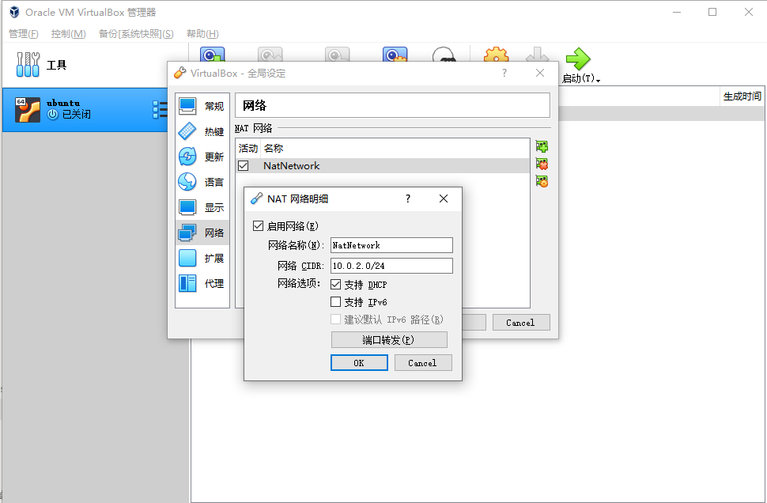

虚拟机网络配置
虚拟机需要既能与宿主机通讯，又能访问公网，在 VirtualBox 可通过 Nat 实现连接外网，通过 Host-Only 实现与宿主机通讯。
VirtualBox 网络的几种连接方式
桥接模式
特点: 1. 如果主机可以上网，虚拟机可以上网 2. 虚拟机之间可以ping通 3. 虚拟机可以ping通主机 4. 主机可以ping通虚拟机 5. 以上各点基于一个前提：主机可以上网 6. 如果主机不可以上网，所有1-4特点均无
NAT 模式
特点: 1. 如果主机可以上网，虚拟机可以上网 2. 虚拟机之间不能ping通 3. 虚拟机可以ping通主机（此时ping虚拟机的网关，即是ping主机） 4. 主机不能ping通虚拟机
Host-Only Adapter 模式
特点: 1. 虚拟机不可以上网 2. 虚拟机之间可以ping通 3. 虚拟机可以ping通主机（注意虚拟机与主机通信是通过主机的名为VirtualBox Host-Only Network的网卡，因此ip是该网卡ip 192.168.56.1，而不是你现在正在上网所用的ip） 4. 主机可以ping通虚拟机
NAT 和 Host-Only 双网卡设置
虚拟机先装个 route 工具
关闭虚拟机，打开管理>>全局设定>>网络，点击右侧 ＋ 就会创建一个 NatNetwok，点击 ⚙ 进行设置

进入管理>>主机网络管理器，创建适配器并启用，手动配置网卡

DHCP 设置如下，可根据自己需要设置

在系统网络设配器可看到

右键虚拟机设置，网卡1设置 NAT 模式

网卡2设置 Host-Only ，界面名称选择刚创建的适配器

启动虚拟机，这里用的是 ubuntu 20.04 版本， sudo vi /etc/netplan/00-installer-config.yaml 编辑文件，须严格按照 yaml 文件格式填写。
# This is the network config written by 'subiquity'
network:
ethernets:
enp0s3:
addresses: []
dhcp4: true
enp0s8:
dhcp4: false
addresses: [192.168.56.102/24]
nameservers:
addresses: [192.168.56.1]
version: 2
:x 保存后 sudo netplan apply 让网络设置生效
enp0s3 就是 NAT 网络的网卡，enp0s8 则是 Host-Only 网络，两个网卡设置别搞反了。
不用设置网关 gateway4，用默认的就行，设置错了可能反而有问题。
route 命令看下路由表，如果设置错了外网不通可看下有没有配错，我一开始 enp0s8 设置错了 gateway4 不是用的 default 网关导致外网不通。
nathan@ubuntu20:~$ route
Kernel IP routing table
Destination Gateway Genmask Flags Metric Ref Use Iface
default 10.0.2.2 0.0.0.0 UG 100 0 0 enp0s3
10.0.2.0 0.0.0.0 255.255.255.0 U 0 0 0 enp0s3
10.0.2.2 0.0.0.0 255.255.255.255 UH 100 0 0 enp0s3
192.168.56.0 0.0.0.0 255.255.255.0 U 0 0 0 enp0s8
ip addr 看下最终的网络
nathan@ubuntu20:~$ ip addr
1: lo: <LOOPBACK,UP,LOWER_UP> mtu 65536 qdisc noqueue state UNKNOWN group default qlen 1000
link/loopback 00:00:00:00:00:00 brd 00:00:00:00:00:00
inet 127.0.0.1/8 scope host lo
valid_lft forever preferred_lft forever
inet6 ::1/128 scope host
valid_lft forever preferred_lft forever
2: enp0s3: <BROADCAST,MULTICAST,UP,LOWER_UP> mtu 1500 qdisc fq_codel state UP group default qlen 1000
link/ether 08:00:27:54:b0:94 brd ff:ff:ff:ff:ff:ff
inet 10.0.2.15/24 brd 10.0.2.255 scope global dynamic enp0s3
valid_lft 85761sec preferred_lft 85761sec
inet6 fe80::a00:27ff:fe54:b094/64 scope link
valid_lft forever preferred_lft forever
3: enp0s8: <BROADCAST,MULTICAST,UP,LOWER_UP> mtu 1500 qdisc fq_codel state UP group default qlen 1000
link/ether 08:00:27:e4:75:f1 brd ff:ff:ff:ff:ff:ff
inet 192.168.56.102/24 brd 192.168.56.255 scope global enp0s8
valid_lft forever preferred_lft forever
inet6 fe80::a00:27ff:fee4:75f1/64 scope link
valid_lft forever preferred_lft forever
让后宿主机可通过 192.168.56.102 连接虚拟机了。
附 CentOS 7 的配置
vi /etc/sysconfig/network-scripts/ifcfg-enp0s3
TYPE=Ethernet
BOOTPROTO=static
DEFROUTE=yes
PEERDNS=yes
PEERROUTES=yes
IPV4_FAILURE_FATAL=no
IPV6INIT=yes
IPV6_AUTOCONF=yes
IPV6_DEFROUTE=yes
IPV6_PEERDNS=yes
IPV6_PEERROUTES=yes
IPV6_FAILURE_FATAL=no
IPV6_ADDR_GEN_MODE=stable-privacy
NAME=enp0s3
UUID=7f1bc04e-54e7-49f6-8597-29085d9ec3de
DEVICE=enp0s3
ONBOOT=yes
IPADDR=192.168.56.101
ip addr
[root@localhost ~]# ip addr
1: lo: <LOOPBACK,UP,LOWER_UP> mtu 65536 qdisc noqueue state UNKNOWN qlen 1
link/loopback 00:00:00:00:00:00 brd 00:00:00:00:00:00
inet 127.0.0.1/8 scope host lo
valid_lft forever preferred_lft forever
inet6 ::1/128 scope host
valid_lft forever preferred_lft forever
2: enp0s3: <BROADCAST,MULTICAST,UP,LOWER_UP> mtu 1500 qdisc pfifo_fast state UP qlen 1000
link/ether 08:00:27:87:2e:ee brd ff:ff:ff:ff:ff:ff
inet 192.168.56.101/24 brd 192.168.56.255 scope global enp0s3
valid_lft forever preferred_lft forever
inet6 fe80::b853:ee1c:d582:c407/64 scope link
valid_lft forever preferred_lft forever
3: enp0s8: <BROADCAST,MULTICAST,UP,LOWER_UP> mtu 1500 qdisc pfifo_fast state UP qlen 1000
link/ether 08:00:27:fe:67:25 brd ff:ff:ff:ff:ff:ff
inet 10.0.3.15/24 brd 10.0.3.255 scope global dynamic enp0s8
valid_lft 86292sec preferred_lft 86292sec
inet6 fe80::2926:9286:bfb2:d040/64 scope link
valid_lft forever preferred_lft forever